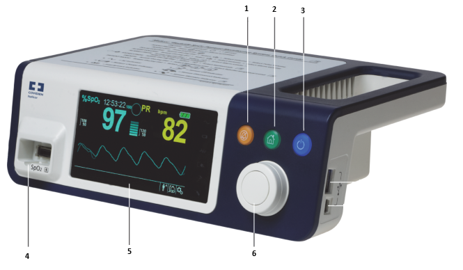
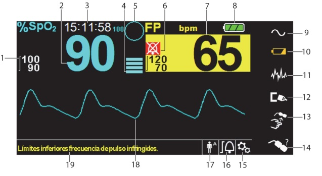
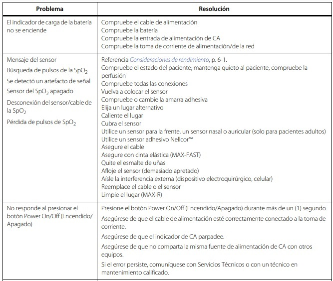
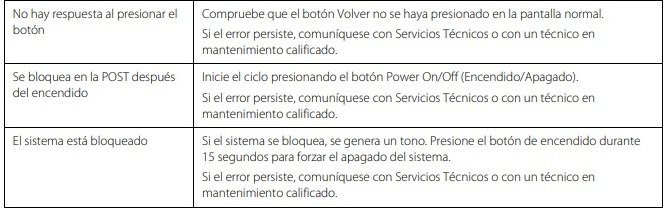
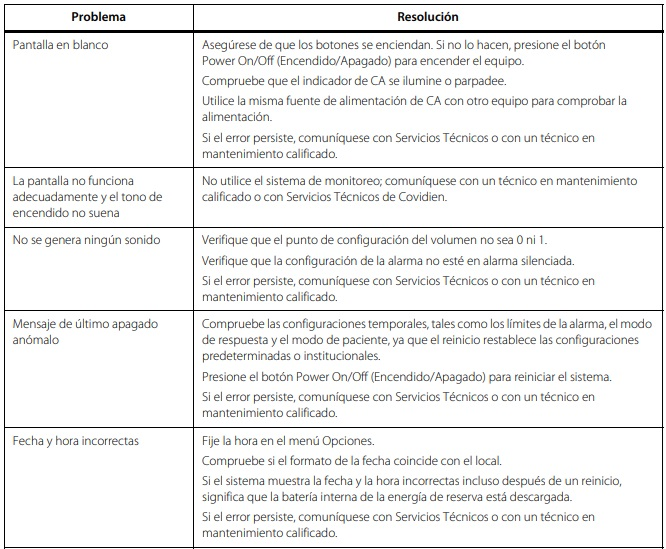
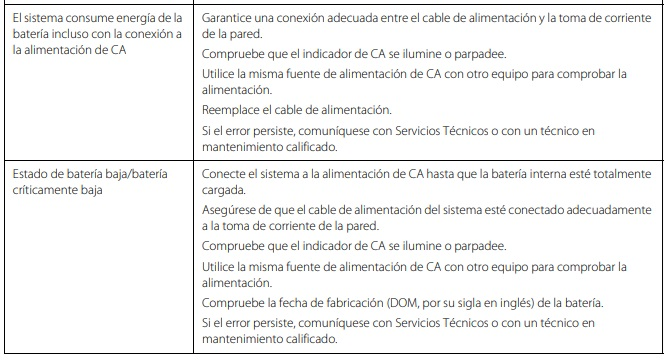
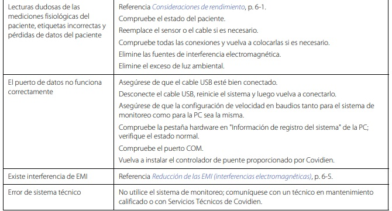

Descripción del Equipo
Un oxímetro Nellcore mide la saturación de oxígeno en la sangre (SpO2) y la frecuencia cardíaca de manera no invasiva, utilizando un sensor colocado en el dedo o lóbulo de la oreja. Es esencial para monitorear la oxigenación de pacientes en hospitales o situaciones de emergencia.
Partes del Equipo
Oxímetro Nellcor
- Botón de silenciamiento de alarma
- Botón para volver
- Botón de encendido y apagado
- Conector para SpO2
- Pantalla de visualización
- Selector táctil
Visualización de pantalla
- Límites de alarma
- Valor en tiempo real de la SpO2
- Hora
- Nivel de latido del pulso
- Icono de gestion de alarma SpO2
- Silenciamiento de alarma
- Audio apagado
- Valor en tiempo real de frecuencia de pulsos
- Estado de batería
- Indica que esta conectado
- Indicador de carga de batería
- Indicador de desconexion del sensor SpO2
- Indicador de apagado de sensor
- Indicador de sensor no válido
- Menú de opciones
- Icono del menú de limites de alarma
- Modo de pacientes
*Adulto
*Pediátrico
*Neonatal - Señal del sensor
- Notificación de mensajes, indica si hay algun problema o solicitud de
Componentes del panel posterio

- Puerto de llamada a la enfermera
- Conector de alimentación
- Cubierta de batería
Guía rápida de operación para el encendido
- Presionar el botón de encendido
- Asegurese de que el indicador SPO2 y el indicador de alarma de frencuencia de pulsos encienda
- Asegúrese de que el tono de aprobación de la POST suene
- Para navegar por el menú se requiere control de los tres botones y el selector
ANEXO: Fallas comunes




